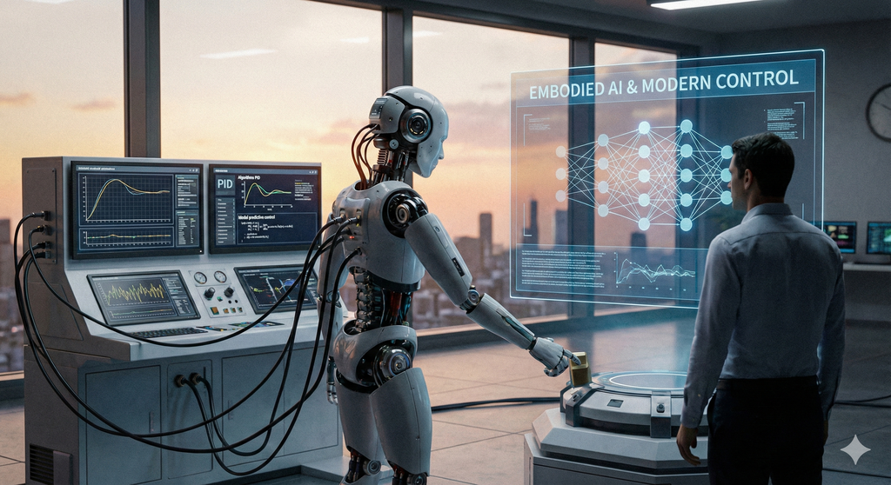

제목: Embodied AI & Modern Control

- Chapter 1. Embodied AI의 태동: 뇌를 가진 신체
- Chapter 2. 제어 이론의 역사와 소프트웨어 2.0
- Chapter 3. 로봇을 위한 SOTA 기술 지형도
- Chapter 4. 하드웨어와 AI의 공진화 (Co-Evolution)
- Chapter 5. 뉴럴 3D 표현과 렌더링 (Neural 3D Representations)
- Chapter 6. 오픈 보캐블러리와 시맨틱 이해 (Open-Vocabulary & Semantic Understanding)
- Chapter 7. 행동을 위한 지각: 어포던스와 포즈 (Perception for Action: Affordance & Pose)
- Chapter 8. 시각을 넘어서: 멀티모달 센서 융합 (Beyond Vision: Multimodal Fusion)
- Chapter 9. 모방 학습 (Imitation Learning): 전문가의 행동 복제
- Chapter 10. 심층 강화학습(Deep RL)의 고도화
- Chapter 11. 세계 모델과 모델 기반 강화학습 (World Models & Model-Based RL)
- Chapter 12. 오프라인 강화학습 (Offline RL): 정적 데이터셋의 가치
- Chapter 13. 계층적 강화학습과 스킬 발견 (Hierarchical RL & Skill Discovery)
- Chapter 14. Sim-to-Real: 가상에서 현실로의 도약
- Chapter 15. 언어 모델, 로봇의 두뇌가 되다 (LLMs as a Reasoning Core)
- Chapter 16. 시각-언어 모델과 개방형 어휘 인식 (VLMs & Open-Vocabulary Perception)
- Chapter 17. 시각-언어-행동 모델 (Vision-Language-Action Models, VLA)
- Chapter 18. 코드로 제어하는 로봇 (Code Generation & Tool Use)
- Chapter 19. 생성형 AI와 시뮬레이션 (Generative AI for Simulation)
- Chapter 20. 파운데이션 모델의 경량화와 엣지 배포 (Efficient Deployment)
- Chapter 21. 학습 기반 모델 예측 제어 (Learning-Augmented MPC)
- Chapter 22. 잔차 학습과 구조적 정책 (Residual Learning & Structured Policies)
- Chapter 23. 미분 가능한 물리학과 시뮬레이션 (Differentiable Physics & Simulation)
- Chapter 24. 전신 제어와 볼록 최적화 (Whole-Body Control & Convex Optimization)
- Chapter 25. 안전한 제어와 이론적 보증 (Safe Control & Theoretical Guarantees)
- Chapter 26. 일반 범용 로봇(Generalist Robot)을 향한 여정
- Chapter 27. 데이터 중심 AI와 시뮬레이션의 진화
- Chapter 28. 신뢰할 수 있는 로봇 지능 (Trustworthy Embodied AI)
- Chapter 29. 하드웨어와 소프트웨어의 공진화 (Co-design)
- Chapter 30. 로봇 윤리와 사회적 통합